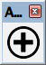
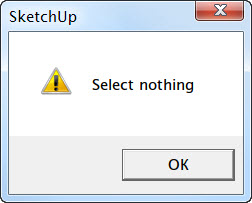
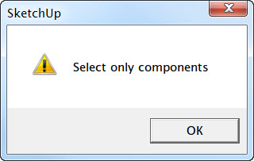
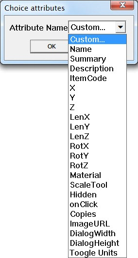
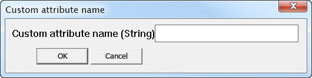
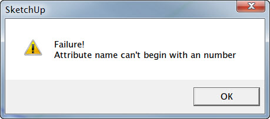
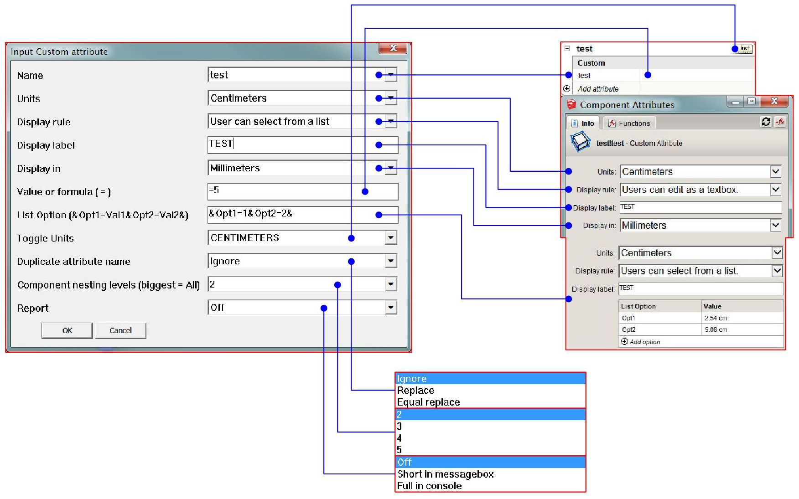
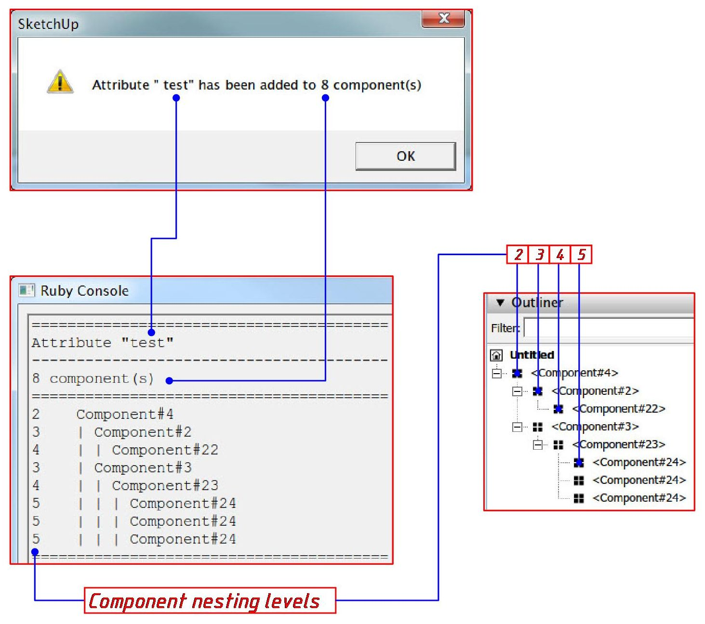

Описание
Плагин для Sketchup 2014 Pro или выше для задания динамических атрибутов выделенным компонентам в модели включая компоненты во всех уровнях вложенности.
Список возможностей:
- Добавление стандартных атрибутов
- Добавление собственных атрибутов
- Работает только с компонентами
- Динамическое изменение выбора уровня вложенности компонентов в зависимости от выбранного
Использование
Использовать можно через панель инструментов

или главное меню программы
Extensions > Add attribute
Add attributes inputbox- Включает диалоговое окно с выпадающим списком для выбора атрибута, который необходимо добавить.Help(Справка) - Открытие файла справки (этой страницы).

При выборе не только компонентов также появится предупреждение о необходимости выбора только компонентов.

Примечание. Для быстрого выбора компонентов существует несколько различных плагинов. Например, Selection Toys.
Если выбор сделан правильно, то появится диалоговое окно, где можно выбрать атрибут для задания ему значений. Это может быть собственный (Custom...), выбор из списка стандартных и возможность переключение единиц измерения в компонентах при задании атрибутов (Toggle Units).

При задании собственного атрибута (Custom...), появится дополнительное окно для ввода имени.

Имя атрибута имеет ряд ограничений. При вводе неправильного формата имени будет выдано предупреждение с пояснением допущенной ошибки при вводе. Например, ошибка имени атрибута, при которой оно начинается цифрой.

Ниже представлен список всех ошибок ввода имени с пояснениями в скобках:
Attribute name can't be empty(Не должно быть "пустым", тоесть не содержащим ни одного символа)Attribute name can't contain spaces(Не должно содержать пробелов)Attribute name can only contain Latin letters and numbers(Состоять только из символов Латинского алфавита и цифр)Attribute name can't begin with an underscore(Не должно начинаться символом подчеркивания)Attribute name can't begin with an number(Не должно начинаться с цифры)You may not name an attribute TRUE or FALSE(Не должно совпадать со словами TRUE или FALSE)
Если введенное имя совпадает со стандартным атрибутом, то задание значений атрибутов будет как у стандартного с этим именем. Ниже показано соответствие полей ввода плагина и встроенного в Sketchup (Window > Component Attributes) инструмента задания атрибутов на примере собственного атрибута. Для стандартных атрибутов диалоговое окна будет содержать другие поля ввода в зависимости от атрибутов.

Поля ввода заполняются также, как и с помощью встроенного редактора атрибутов. Некоторые поля добавлены для удобства работы и аналогов не имеют. У некоторых для понимания работы есть подсказки в скобках
List Option.Ввод значений осуществляется по шаблону&Opt1=Val1&Opt2=Val2&. Крайние значки амперсанда ("&") обязательны. Между блоками ввода которые аналогичны строке в стандартном интерфейсе так же должен быть разделительный амперсанд. Если значение будет означать длину, то нужно задавать значения в дюймах.Duplicate attribute name(Способ обработки атрибута, если таковой уже имеется):- Ignore- Значение атрибута останется прежним- Replace- Значение атрибута будет заменено новым- Equal replace- Будет обработано только значение атрибута, если атрибут существует. Если не существует, то он не будет присвоен. Если существует, то будет задано новое значение.Component nesting levels(Уровень вложенности обрабатываемых компонентов). Если выбрано максимальное число из списка, то будут обработаны все компоненты. Более подробно о вложенности смотрите рисунок ниже.Report(Вывод отчета):- Off- Без отчета- Short in messagebox- Краткий отчет в информационное окно.- Full in console- Полный отчет в Руби Консоль (Window > Ruby Console). В отчет будет выведено: название атрибута, количество компонентов, к которым была применена операция задания атрибутов, уровень вложенности компонентов. Группа добавляет уровень вложенности, но к группе не может быть добавлен атрибут. Список компонентов будет отображен в виде дерева согласно вложенности элементов, аналогично как вOutliner

Установка
Плагин работает только в Sketchup 2014 Pro или выше. Установите новую версию программы перед использованием плагина. Installing Ruby Plugins in SketchUp